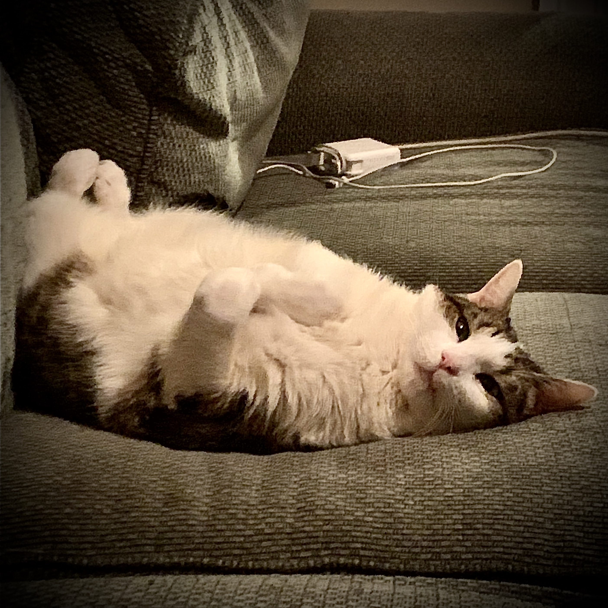

Albert Freestone
Wanderer... Wonderer

Wondering
This page is to denote the difference between wondering and wandering. Only at the height of exploration and knowledge can the two be unintertwined. Albert or kitty for short has the capacity, at all moments, to hold both platitudes in contempt of reason. One can call this furthered state, "Alber".
Born and raised in the rugged land of peaches with a wisp of cotton in his eye. Our fluffy white adventurer has many secrets beneath his plush coat. Often containing tuna juice or perhaps visiting an auspicious watering hole, next moves are not to be known but acted.